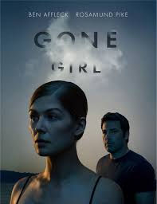
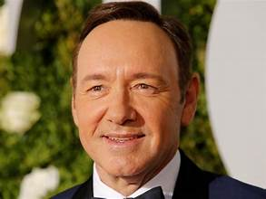
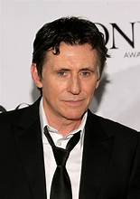

The Usual Suspects
Overview
“The Usual Suspects” is a 1995 neo-noir crime thriller directed by Bryan Singer.
The film centers on a handful of small-time criminals who are brought together for a police lineup and later become involved in a complex plot orchestrated by the mysterious crime lord Keyser Söze.
Told largely through the unreliable narration of Roger "Verbal" Kint, the movie weaves deception, manipulation, and a famous twist ending into a tense, stylish narrative that explores identity, myth, and moral ambiguity.
Known for its sharp script, standout performances, and one of cinema's most talked-about reveals, it remains a landmark crime thriller.
Screenshots


Genres
Main Characters

Kevin Spacey (Roger 'Verbal' Kint)

Gabriel Byrne (Dean Keaton)
Benicio Del Toro (Fred Fenster)
Stephen Baldwin (Michael McManus)
Audience Interaction Meter
80%
Based on 250K+ votes
Go (70%)
Timepass (15%)
Skip (5%)
Perfect (10%)